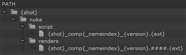

| 1。 | 在 bin 视图中选择整个序列，或在时间轴中选择剪辑实例，然后导航到 文件 > 出口. |
的 出口 对话框显示。
| 2. | 选择 作为镜头处理 从 出口 下拉列表。 |
| 3. | 输入 导出到 目录或单击 选择…… 并浏览到该位置。 |
的 导出到 目录是快照模板构建快照层次结构的起点。
| 4. | 选择 基本核弹射击 预设在 本地预设 通过复制现有模板并根据需要进行编辑，自动完成快照模板或构建自定义快照模板 路径 代币, 内容 字段，文件夹和 +/-按钮。 |
基本核弹射击 为每个剪辑或快照创建一个文件夹，其中包含 Nuke , 脚本 ,和 渲染 文件夹。

中的令牌 基本核弹射击 模板分解如下:
• {Shot} 只需在剪辑实例名称出现在时间轴中时提取它们。
• {Shot} _ comp {_ nameindex} _ {version}.nk 提取每个剪辑的剪辑实例名称和在 轨道和手柄 控制。例如, Shot01_comp_v03.nk
• {Shot} _ comp {_ nameindex} _ {version}。#。{ext} 追加填充和指定的文件扩展名。例如, Shot01_comp_v03.0001.dpx
注意: 的 {_ Nameindex} 包括令牌以避免与非唯一的快照名称冲突。
提示: 在快照模板中选择一个文件条目，以显示文件路径的预览，并解析所有标记。
| 5. | 继续到 Nuke 项目文件设置 来确定核弹脚本的行为。 |
|
|